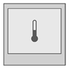
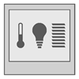

QMX3.P35H、P38H 设备属性
列出的属性显示在Hardware and network editor > Inspector window > Properties当在 KNX PL-Link 的设备在Device view选项卡。
QMX3.P35H | QMX3.P38H |
|
|
 |  |
|
|
General and Catalog information
常规和目录信息组提供有关设备的信息。
财产 | 描述 | 默认值 |
|---|---|---|
模式 | 模式显示设备的网络模式。只读。 | KNX PL-Link |
姓名 | 名称是用于输入设备名称的文本字段。该名称用于在设备视图中标识该设备。 | 取决于其他设置。 |
评论 | 注释是一个自由文本字段，用于输入有关设备的任何有用信息。 | - |
功耗 | 功耗显示设备消耗的电量。只读。 单位：[毫安] 该值用于计算 KNX 轨道的剩余电量。 另请参阅功耗和电源KNX rail of PXC3orKNX rail of DXR2. | 取决于设备类型。 |
简称 | 简短名称显示设备的简短描述。只读。 | 取决于设备类型。 |
订单号 | 订单号显示设备类型。只读。 | 取决于设备类型。 |
版本 | 版本显示设备的内部版本。只读。 | - |
描述 | 描述显示设备的简短描述。只读。 | 取决于设备类型。 |
Device information
设备信息组提供有关设备和设置的信息。
财产 | 描述 | 默认值 |
|---|---|---|
设备地址 (KNX) | 设备地址 (KNX) 显示具有 KNX PL-Link 的设备的固定标准地址。只读。 | 255 |
使用的序列号 | 使用的序列号定义了设备识别的方法。
|
|
序列号 | 序列号是一个文本字段，用于输入用于设备识别的序列号。 仅当启用使用的序列号时，序列号才启用且有意义。 | 000000000000 |
行函数 （仅QMX3.P38H） | 行函数定义哪个函数应用于哪个通道行。
HVAC：供暖、通风和空调。只读。 LDSB：基本调光传感器。只读。 SSSB：基本遮阳帘传感器。只读。 | 对于所有行： LDSB |
 ：在文本字段序列号中输入的序列号用于设备识别。
：在文本字段序列号中输入的序列号用于设备识别。 ：设备识别必须在Web界面中完成。设备必须处于 Web 界面编程模式才能执行设备识别。
：设备识别必须在Web界面中完成。设备必须处于 Web 界面编程模式才能执行设备识别。 可用功能列表：
可用功能列表：下表简要描述了这些功能。功能的分类取决于设备。
Alarming
财产 | 描述 | 默认值 |
|---|---|---|
令人震惊 |
|
|
Functions
通道概述中的功能表提供了设备通道的概述。根据设备的不同，表中的值是只读的或可以编辑的。可用类型取决于设备和应用程序功能。
财产 | 描述 |
|---|---|
姓名 | 频道名称。只读。 |
类型 | 函数的名称。 |
区 | 设备地理地址的一部分。 范围：1...126 |
房间 | 设备地理地址的一部分。 范围：1...63 |
分区 | 设备地理地址的一部分。 范围：1...15 Note |
激活 | 激活定义通道是否被激活。
|
一些功能是可以配置的。下面按字母顺序描述这些函数的属性。
Room temperature sensor (RTS)
财产 | 描述 | 默认值 |
|---|---|---|
值变化，COV | 值更改，COV 定义触发过程值发送的过程值更改。 范围： | 0.1 |
心跳 | 心跳定义了在值未更改或更改小于更改值 COV 的情况下报告过程值的时间间隔。 范围： | 120 |
最小重复时间 | 最小重复时间定义了发送下一个过程值之前的最小时间间隔。 范围： | 10 |
 0.1...1.0 [K]
0.1...1.0 [K]Scene sensor (SCS)
财产 | 描述 | 默认值 |
|---|---|---|
记住 | 记忆定义是否可以使用示教保存场景。
|
|
场景功能 | 定义是否调用或保存编号的场景。
|
|
TeachInDisable | TeachInDisable 定义是否可以保存给定场景的当前设置。只读。
|
|
积极的 | 活动定义预定义场景在房间操作员单元上是否可用。
|
|
数字 | 数字定义行中的设置适用于哪个预定义场景。 范围：1...12 1: Presentation 2: Meeting 3: Break 4: Occupied 5: Vacant 6: Do not disturb 7: Cleaning 8: Service 9: Sleep 10: Entertainment 11: Brighter 12: Darker | 取决于其他设置。 |
脉冲长度 | 脉冲长度定义了必须按下按钮多长时间才能检测到长按键。 属性用于区分调用（短按按键）或示教（长按按键）命令。 范围： | 50 |
User HVAC display
QMX3.P35H 和 QMX3.P38H 支持外部传感器区域
财产 | 描述 | 默认值 |
|---|---|---|
Outside sensor zone | 外部传感器区域定义了哪些外部传感器向房间操作员单元提供数据。 外部传感器被分配到外部传感器区域而不是地理地址（建筑区域、房间、子区域）。 范围： | 取决于其他设置。 |
启用临时房间 |
| 启用 |
User HVAC room settings (UHRS)
财产 | 描述 | 默认值 |
|---|---|---|
手动模式 | 设置属性的优先级。 范围： | 13 |
操作模式的操作限制 | 设置属性的优先级。 范围： | 13 |
设定点的操作限制 | 设置属性的优先级。 范围： | 13 |
存在按钮的操作限制 | 设置属性的优先级。 范围： | 13 |
设定点分辨率 | 设定点分辨率定义了用户可以对室温设定点进行的最小调整。 范围： | 1 |
User fan speed setting (UFS)
财产 | 描述 | 默认值 |
|---|---|---|
启用快速通气1) | 启用快速通气定义用户是否可以开始快速通气。
|
|
级数1) | 级数定义了所连接风扇的速度控制类型。 范围： 1...3：分级调速风扇（1、2、3 级） 4...99：不支持 100：变速控制 | 3 |
手动模式 | 设置属性的优先级。 范围： | 13 |
风扇速度运行限制 | 设置属性的优先级。 范围： | 13 |
Energy efficiency function (EEF)
财产 | 描述 | 默认值 |
|---|---|---|
激活 | 启用或禁用“绿叶”功能。
|
|
改为绿色 | 定义“绿叶”LED 变绿的条件。
|
|
Extended device
财产 | 描述 | 默认值 |
|---|---|---|
活动单位组 |
| 公制（摄氏度） |
Room unit device object (RUDO)
财产 | 描述 | 默认值 |
|---|---|---|
EnableContrModeAct | EnableContrModeAct state 启用或禁用工厂状态的显示。
|
|
启用风扇速度 | 启用风扇速度定义是否显示风扇速度以及用户是否可以更改风扇速度。
|
|
Enable HVAC mode | 启用 HVAC 模式定义是否显示当前操作模式。
QMX3 interface: RClmOpModIn, RClmOpModRu |
|
启用房间入住 | EnableroomOccupancy 定义用户是否可以通过确认其存在来影响房间操作模式。
|
|
EnableHumRelSetp | EnableHumRelSetp 定义是否显示任何相对湿度值。
|
|
启用 Cmf 延长 | 启用 Cmf 延长定义是否启用房间占用的舒适延长功能。
|
|
启用 TP 设置转换 | 启用 TP 设置偏移定义是否显示温度设定点或温度设定点的偏移以及用户是否可以更改其中之一。
|
|
临时设置用户操作类型 | 类型定义如何显示温度设定值的变化。
|
|
UlIdletime | UIIdletime 定义显示从当前活动页面返回到默认页面之前的时间（请参阅默认显示）。 范围： | 60 |
BackLightIdletime | BackLightIdletime 定义最后一次操作按键后背光关闭之前的时间。 范围： | 15 |
超默认页面 | Uldefaultpage 定义“返回默认显示”时间过后显示哪个页面。
|
|
启用细尘显示 | Enablefinedustdisplay 定义可以显示哪些颗粒物值。
|
|
启用温度显示 | 启用温度显示定义可以显示哪些温度值。
|
|
启用 hum rel 显示 | 启用湿度显示定义可以显示哪些相对湿度值。
|
|
启用 AQ 显示 | 启用 AQ 显示定义可以显示哪些空气质量。
|
|


 并影响运行模式。
并影响运行模式。


User presence switch (UPS)
财产 | 描述 | 默认值 |
|---|---|---|
存在状态操作限制 | 设置属性的优先级。 范围： | 13 |
User relative humidity setpoint settings (URHSS)
财产 | 描述 | 默认值 |
|---|---|---|
步长增量 HMI | 增量定义每次按下该键时相对湿度设定点变化的值。 范围： | 1 |
PrioThreshHumRelSetp user locked | 设置相对湿度设定点的优先级阈值，低于该阈值将阻止用户干扰。 范围： | 13 |
Light dimming sensor basic (LDSB)
财产 | 描述 | 默认值 |
|---|---|---|
脉冲长度 | 脉冲长度定义了配置数据属性，该属性提供了检测脉冲的时间。 长按按钮可区分短按键和长按键。 | 5 |